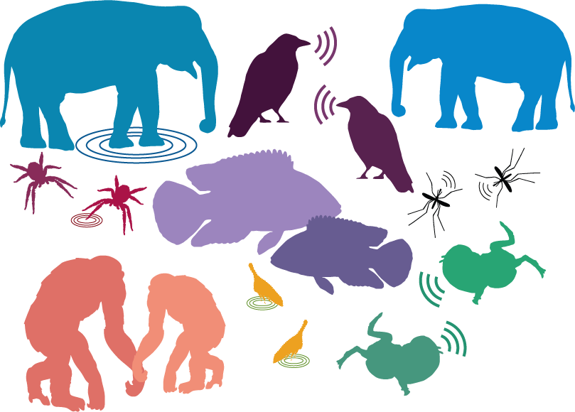
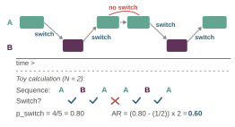
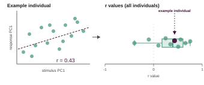

Events
Previous
Ongoing collaboration
Conversation Consortium
The communicative interactions of animals take diverse forms, such as duetting in songbirds, vibratory signaling in leafhoppers, gestural interactions of chimpanzees, and territorial displays of fish. Yet across this diversity, individuals must attend to the signals produced by others and modulate their own outputs in response. We hypothesize that these systems are built upon shared organizational principles, and that the diversity of social behavior can arise partly through the reorganization of conserved building blocks rather than the evolution of wholly novel interaction structures (West-Eberhard 1989).
The Conversation Consortium is a collaborative project that tests this hypothesis by calculating a small set of simple, common metrics on as wide a range of datasets as possible, and asking whether recurring patterns emerge across phylogenetically distant taxa. The project is expected to culminate in a large multi-authored paper with all dataset contributors. Datasets will consist of communicative behaviors with timestamps, tagged to individual identity, that can be captured using continuous variables (e.g., acoustic features, movement vectors, signal duration and amplitude etc., usually summarized using principal components analysis).
These analyses are based on call interactions in female zebra finches (James, Hoffman, Liu et al. 2026).
References
James, Hoffman, Liu et al. (2026) Leveraging AI-powered interactive playbacks to decipher rules of communication in zebra finches. bioRxiv; under revision. Preprint
West-Eberhard (1989) Phenotypic plasticity and the origins of diversity. Annual Review of Ecology, Evolution, and Systematics.

Get Involved
Interested researchers can conduct analyses on their own datasets, or have us calculate features on their dataset. We encourage starting with relatively small datasets, limited to focused interactions among small groups of animals (e.g., 2-5).
Workshop I: Initial Metrics (Fall 2026)
1 Alternation Rate

2 Local Covariation
